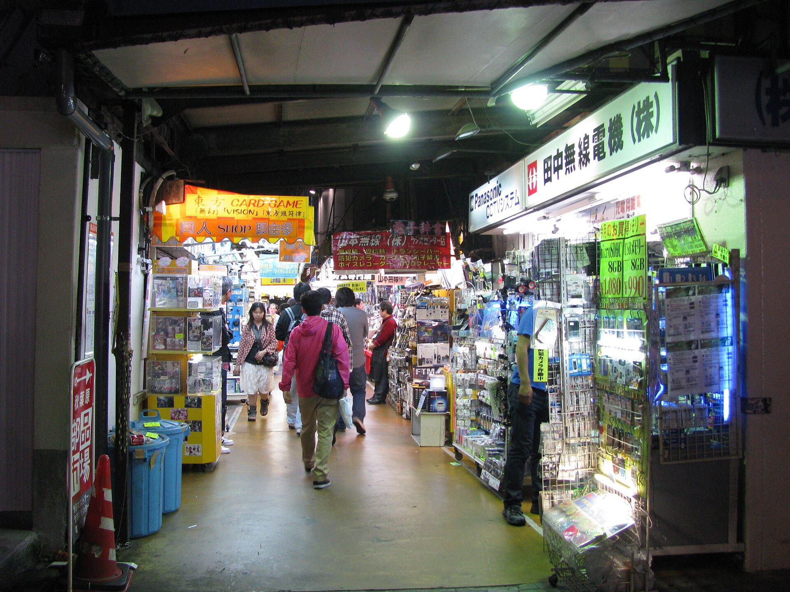
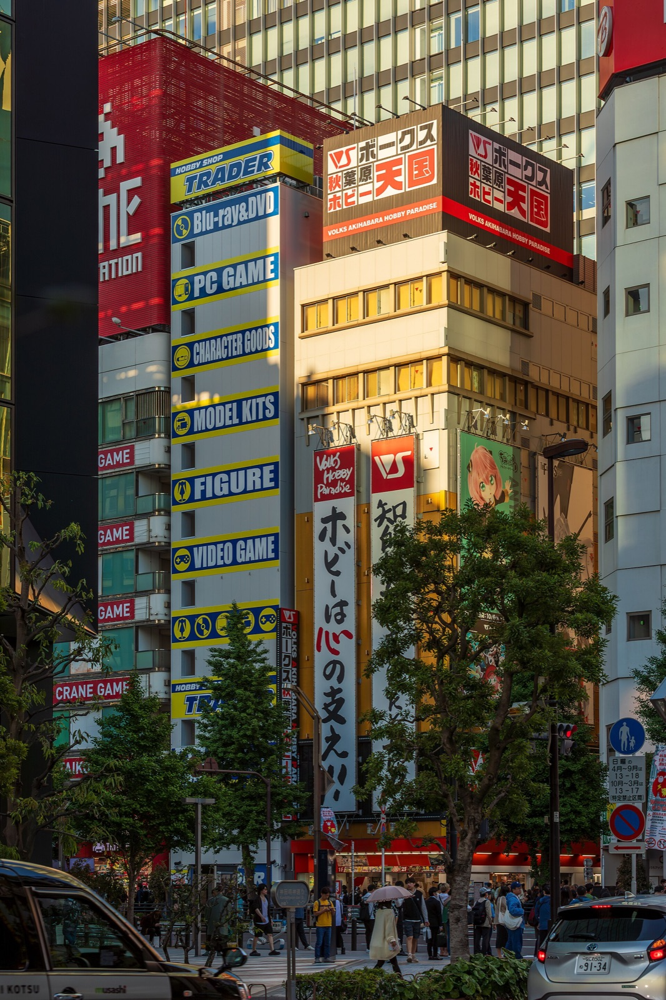

Japan with
Japan withLeave Akihabara Station through the Electric Town Exit and the district announces itself at billboard scale: anime faces, game arcades, capsule toys, collectible figures, maid-café invitations, and electronics stacked vertically across whole buildings. A first visit can feel like entering the internet in physical form. Yet the most revealing objects are smaller. Look for a tray of switches, a handwritten price tag, a glass case devoted to one narrow series, or a shop that assumes its customer already knows the difference between two nearly identical parts.
That is the puzzle of Akihabara. Why did one Tokyo neighborhood become a world-famous home for intensely specific interests? The answer is not simply “anime became popular.” Akihabara repeatedly rebuilt itself around people who know exactly what they are hunting for—and merchants willing to dedicate very little floor space to that very deep desire.
First, understand the map
“Akihabara” is less a neatly bounded attraction than a commercial ecosystem around the station. The west side—especially Chuo-dori and the lanes of Soto-Kanda—is the familiar Electric Town. The east side beyond the JR tracks and Showa-dori is more ordinary and office-like. For the classic first impression, use JR Akihabara Station’s Electric Town Exit. JR East lists four gates, so “meet at Akihabara Station” is not precise enough for a group.
Chuo-dori supplies the spectacle, but the side streets supply the texture. Large buildings are easy entry points for new releases and organized browsing. Smaller stores and upper floors reward a specific target: components, retro software, model parts, trading cards, audio equipment, doujin works, or one character universe. Akihabara is not one shop category. It is a stack of micro-markets.
The name came from fire, not electricity
In 1869, a major fire swept through the area. Tokyo’s government created a firebreak of about 9,000 tsubo—roughly 30,000 square metres—and in 1870 enshrined a fire-protection deity associated with Akiba. The open land became known as Akibappara or Akihabara; the shrine later moved, but the railway station carried the name forward.
This first layer matters because it overturns the usual story. Akihabara did not begin as a planned technology quarter. It began as cleared urban space beside transport infrastructure. Railways, open land, and proximity to Kanda and Ueno made it useful for trade long before glowing character signs made it photogenic.

The answer is under the tracks
After World War II, street vendors around Kanda sold vacuum tubes and other electrical parts. Radios were valuable portals to news and entertainment, and assembling one could cost far less than buying a finished set. The Akihabara Electric Town Promotion Association records that around 1950, roughly 50 of about 120 stalls in the Ogawamachi–Sudacho area were electrical dealers.
Then policy reshaped the market. A 1949 order removed stalls from major roads. Vendors demanded covered alternatives, and Tokyo, working with the national railway, relocated them beneath and beside the tracks at Akihabara. Radio stores and compact multi-tenant buildings followed. The association’s archive says this is when the recognizable combination of Chuo-dori shops and Electric Town Exit dealers took form.
Here is the larger answer: Akihabara became Akihabara because displacement compressed specialists into a highly connected place. Customers came with technical questions. Sellers competed through knowledge and depth, not elegant displays. That commercial grammar survived even as the merchandise changed—from radio parts to appliances, audio, personal computers, games, manga, figures, cards, idols, and cafés.
How to read today’s anime city
Anime did not erase the electronics district; it inherited its architecture. A small radio stall could survive by stocking the exact connector unavailable elsewhere. A collectible store uses the same logic with a rare figure or limited badge. Upper-floor retail also rewards committed customers: casual foot traffic may stay at street level, while fans follow signs into elevators and narrow stairways.
This explains why Akihabara works best when you arrive with one curiosity rather than a generic instruction to “see anime.” Choose a theme—retro games, model kits, a current series, mechanical keyboards, audio, trading cards—and compare how a large retailer, a resale store, and a tiny specialist interpret it. Prices are not automatically low. Central location, rarity, condition, and tourist demand all matter; compare before buying, and inspect used-item grading carefully.

A half-day route that follows the story
- Start: Electric Town ExitOrient yourself before crossing. Notice the tracks: they are part of the district’s history, not background scenery.
- Radio Center and the lanes beneath the railwayBegin with components, cables and compact counters. Even if you buy nothing, this gives context for everything that follows.
- Chuo-doriWalk the main avenue once for scale. On eligible Sundays, the vehicle-free section offers the clearest view of the urban canyon.
- One deep-interest buildingPick a category and explore several floors slowly. Ask before photographing interiors or merchandise.
- Cross toward 2k540 or walk to Kanda MyojinEither route breaks the visual intensity: craft shops beneath the tracks to the north, or a historic shrine uphill to the west.
Maid cafés: participate without pretending
Maid cafés are a form of themed hospitality built around scripted character performance, playful language, and paid interaction. They are not a window into ordinary Japanese domestic life, and staff costumes are not consent to street photography. Check the menu, cover charge, time limit, age policy, and photography rules before entering. Some venues welcome first-timers clearly; others assume Japanese ability or familiarity with the format. If the premise does not appeal to you, skipping it does not mean you missed “the real” Akihabara.
The same respect applies outside. Do not photograph promoters closely without permission. Do not block narrow pavements while comparing flyers. Shops may prohibit photos even when the street outside feels visually public.
Before you go
- Best timing
- Weekday afternoons for easier browsing; Sunday afternoon for the pedestrian zone if weather permits. Many specialist shops open later than a sightseeing temple, so early morning can feel quiet.
- Sunday street closure
- Officially 13:00–17:00 from October through March and 13:00–18:00 from April through September, on a 570-metre section of Chuo-dori. It can be cancelled for rain, storms, strong wind, or forecast bad weather.
- Rules
- No street selling, performances, live music, or cycling in the pedestrian zone. Shop and café rules vary.
- Shopping
- Bring a passport if you plan to use tax-free shopping where eligible, but confirm the current rules and store participation at the point of purchase.
- Reality check
- Weekends are crowded, stairs and narrow aisles can limit accessibility, and large purchases become luggage. Coin lockers can fill; plan before buying.
Why Akihabara still matters
The district is often described as an “otaku mecca,” but that phrase can flatten both the people and the place. Otaku covers many interests and identities; visitors are not observing a single tribe. What is distinctive is the permission to care deeply and specifically in public. A shelf, floor, or entire building can be devoted to a subject that mass retail elsewhere would reduce to a few bestsellers.
That permission also makes the neighborhood fragile. Online shopping can serve narrow demand without Tokyo rent. Redevelopment favors larger tenants. Famous stores close, move, or change focus. Yet Akihabara has never been frozen: its continuity lies in adaptation. The medium changes; the marketplace for knowledge, collecting, making, and belonging remains.

See the city as it is now.
Yuji is the editor of Japan Unfolded and creator of DraMap. Walk real Japanese streets with him on TikTok LIVE, then learn the words around you through play on iPhone.
Sources and verification
Operational details checked October 31, 2026. Reconfirm closures, hours, prices, and store policies before travel.
- Akihabara Electric Town Promotion Association: origin of Akihabara
- Akihabara archives: postwar radio market, 1945–1954
- Akihabara pedestrian-zone schedule and rules
- GO TOKYO: official Akihabara visitor guide and access
- Japan National Tourism Organization: Akihabara
- JR East: Akihabara Station gates and facilities